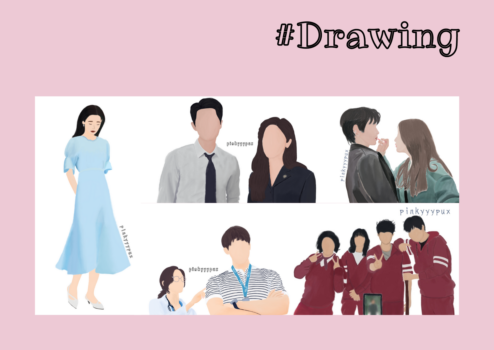
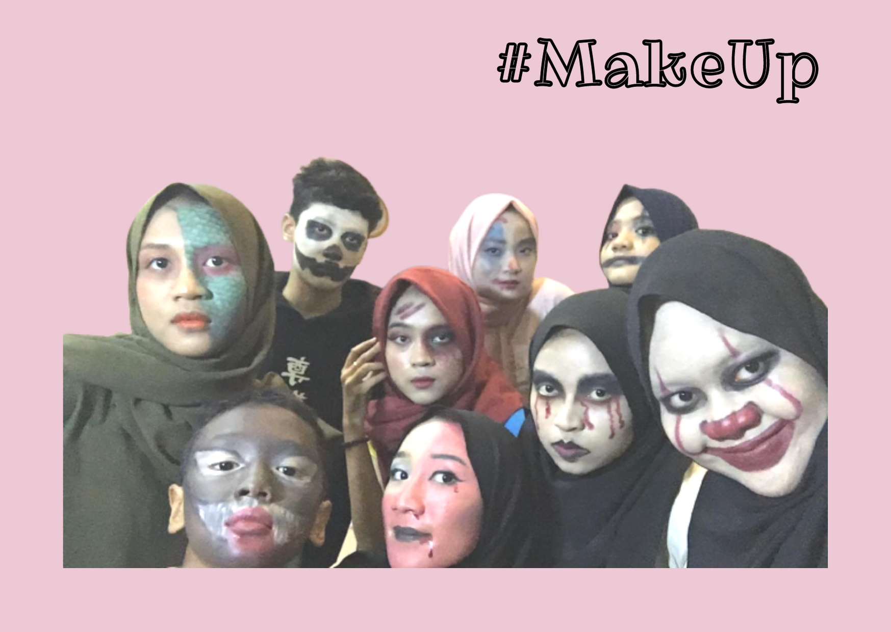
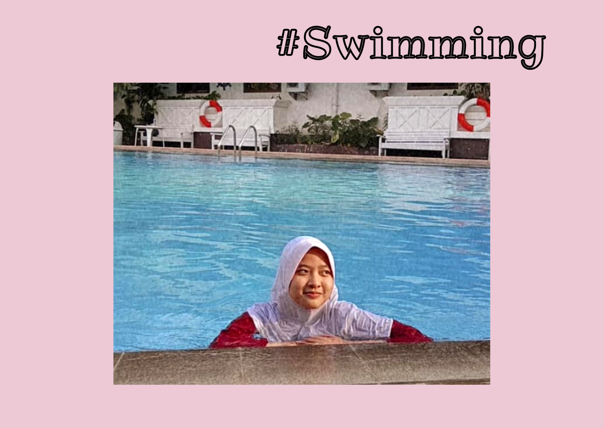
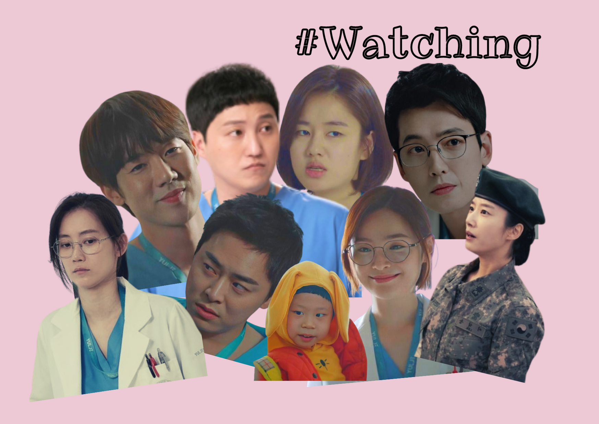

Haii, selamat datangdi gallery shofi! Halaman yang kamu buka ini akan berisi tentang cerita dan foto sesuai tema yang diangkat. Kali ini aku pilih untuk mengangkat tema "Hobi". Jadi, selanjutnya aku akan bercerita tentang hobi - hobi ku. Untuk melihat foto-foto yang ada disini, silahkan klik "gallery" yang ada di navbar ya!
Sebelumnya, halaman ini akan menjadi panjaaang sekali karena ada banyak yang akan aku ceritakan. Jadi, siapkan waktu, cemilan yang banyak, sama minumnya jangan lupa, untuk menemani kamu membaca cerita yang amat sangat panjang ini.
Let's get start it!
1. Membaca dan Menulis
Ini adalah hobiku dari aku kecil. Dulu, aku suka sekali membaca novel novel anak atau komik, sekarang pun aku masih suka membaca. Namun bacaanku beralih menjadi fanfiction hehe. Dulu aku juga suka menulis cerita - cerita pendek, sekarang pun aku masih suka menulis. Namun tulisanku beralih menjadi fanfiction.

Foto diatas adalah dua platform yang aku jadikan tempat aku menyalurkan hobiku yang satu ini. platform pertama yaitu archiveo of our own, disini tempat aku membaca cerita cerita dari manca negara. Aku lebih sering membaca cerita berbahasa inggris sembari aku juga belajar. Dan platform kedua, yaitu wattpad, disini tempat aku menulis cerita ceritaku. Ada dua cerita yang sudah aku publish, namun belum sempat aku lanjutkan, hehehehe.
2. Menggambar
Hobi ini awalnya karena gabut banget pas quarantine. Aku iseng download applikasi gambar digital gitu dan, taraaa~~
Gambar - gambar itu dari scene-scene di kdrama yang aku suka. Aku masih dalam tahap belajar nih, jadi mungkin gambar - gambarnya belum seberapa. Dan, gak cuma gambar digital, aku juga lagi coba gambar langsung di kertas, kayak gini!

3. Make Up
Waktu itu aku lagi bosen aja, scroll scroll youtube, eh ketemu salah satu video dari beauty vlogger terkenal namanya Tasya Farasya. Awalnya aku tonton doang, lama - lama aku kepo dan akhirnya aku ikutin.

Nah, foto pertama itu waktu lagi rame ramenya mugshot challenge, jadi make up ala tahanan yang luka luka gitu. Kalau foto yang kedua ini, waktu halloween. Kebetulan gabut aja pas lagi ngumpul sama sepupu - sepupuku.
4. Beryanyi
Balik lagi sama hobi dari kecil, yapp, nyanyi! Berawal dari dengerin lagu, eh ikutan nyanyi, hehehe. Ya walaupun suara aku ga begitu bagus sih, tapi yaa aku nyanyi untuk diriku sendiri, hahahaha. Oh iya, aku pernh ikut paduan suara 25 loh waktu wisuda kakak kakak 61, nih fotonya..

5. Minum Boba
Yap, minuman yang lagi ngehitz ini emang seenak ituuu. Boba ini bisa ditemuin dimana aja saking banyaknya. Jenisnya pun ada banyak dari milk tea, brown sugar, sampai kopi. Tapi jangan terlalu sering ya, selain ga bagus buat kesehatan, ga bagus juga buat kantong!

6. Memasak
Mama ku selalu ajak aku buat bantuin masak, lama - lama aku mulai ngerti dan aku juga suka! Waktu dalgona coffee lagi ngetren aku juga ikut buat loh!

7. Berenang
Waktu TK aku ikut les berenang, awalnya disuruh mama, tapi ternyata aku suka. Berlanjut sampai aku SD, dan aku sempat ikut lomba senasional, tapi kalah, hahaha. Karena sekarang masih pandemi, jadi susah buat berenang huhu sedih :((
8. Menonton
Terakhir, hobi ini kayaknya selalu aku lakuin tiap hari. Hobi yang udah jadi rutinitas. Aku suka banget nonton apapun itu mau series ataupun film, dari indonesia, western, thailand, atau korea. Walaupun kebetulan yang lagi aku tontonin series dari korea atau bisa dibilang k-drama. Aku juga suka genre apapun, tapi let me present you my top 3 favorite genre. medical, slice of life, thriller crime.
Foto itu aku edit sendiri! Orang - orang diatas adalah cast dari k-drama favoriteku, judulnya hospital playlist. Bercerita tentang keseharian 5 orang dokter yang bersahabat, dan mereka juga punya hobi bareng yaitu nge-band!
And, yaa selamat! Kamu udah sampai di ujung halaman! See you on another story, byeee!